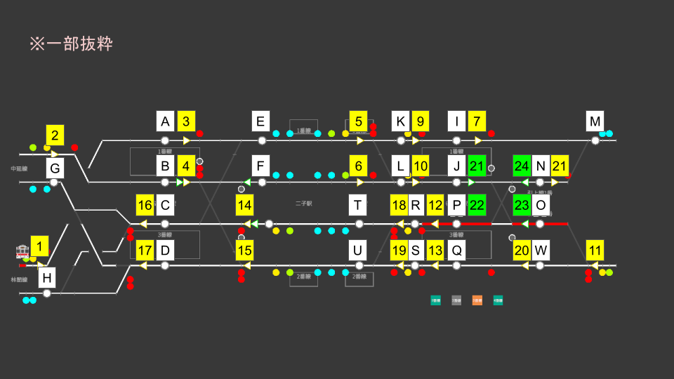

🎯 맵 개요
다니노쿠치는 본작에서 처음으로 여러 역을 한꺼번에 담당하는 맵입니다. Yuen-mae(유엔마에)·Futako(후타코)·Shinmachi(신마치)·다니노쿠치의 4개 역이 복복선 구간으로 이어져 있으며, 바깥쪽을 달리는 Rinkan Line(린칸선)과 안쪽을 달리는 Nakanobu Line(나카노부선)의 2개 계통을 동시에 관리합니다.
- 역: Yuen-mae(번선 4개) → Futako(번선 2개) → Shinmachi(번선 2개) → 다니노쿠치(번선 4개)
- Rinkan Line … 외측선. 맵을 그대로 지나가는 관통 계통 (각정·준급·급행, 상행은 Subway 직통)
- Nakanobu Line … 내측선. 다니노쿠치가 종점이며, 인상선에서 회차하는 계통 (파랑각정·초록각정·급행)
- 인상선: 다니노쿠치 너머에 2개 (Nakanobu Line의 회차용). Yuen-mae 쪽에도 예비 인상선 있음
- 발차 신호가 필요한 곳은 다니노쿠치뿐. 다른 역은 진로가 개통되어 있으면 시각대로 자동 발차합니다
🗺 레버 배치도

맵 전역에 레버가 배치되어 있습니다. 왼쪽이 Yuen-mae, 오른쪽이 다니노쿠치와 인상선입니다.
🚈 2개 계통과 종별
| 계통 | 주행 선로 | 종별 | 운행 형태 |
|---|---|---|---|
| Rinkan Line | 외측선 | 각역정차 / 준급 / 급행 | 맵을 좌우로 관통. 회차 없음. 상행 열차는 Subway 직통 |
| Nakanobu Line | 내측선 | 파랑각정 / 초록각정 / 급행 | 다니노쿠치 2번선이 종점. 인상선에서 회차하여 3번선에서 되돌아감 |
🔧 진로 목록
진로는 시점 레버와 종점 레버의 조합으로 구성됩니다. 역별로 그룹을 나누어 소개합니다.
Yuen-mae 역 (맵 왼쪽 끝)
| 진로명 | 시점 → 종점 | 용도 |
|---|---|---|
| 1A | 1 → A | 하행 장외에서 Yuen-mae 1번선으로 진입하는 진로 (Rinkan Line) |
| 2B | 2 → B | 하행 장외에서 Yuen-mae 2번선으로 진입하는 진로 (Nakanobu Line) |
| 3E | 3 → E | Yuen-mae 1번선에서 Futako 방면으로 출발하는 진로 (Rinkan Line 하행) |
| 4E | 4 → E | Yuen-mae 2번선에서 외측선으로 전선하여 출발하는 진로 (파랑각정: Futako·Shinmachi에 정차) |
| 4F | 4 → F | Yuen-mae 2번선에서 내측선을 그대로 직진해 출발하는 진로 (초록각정: Futako·Shinmachi 통과) |
| 14C | 14 → C | Futako 방면에서 Yuen-mae 3번선으로 진입하는 진로 (Nakanobu Line 상행) |
| 15C | 15 → C | Futako 방면에서 Yuen-mae 3번선으로 진입하는 진로 (전선 경로) |
| 15D | 15 → D | Futako 방면에서 Yuen-mae 4번선으로 진입하는 진로 (Rinkan Line 상행) |
| 16G | 16 → G | Yuen-mae 3번선에서 상행 장외로 출발하는 진로 (Nakanobu Line) |
| 16H | 16 → H | Yuen-mae 3번선에서 상행 장외로 출발하는 진로 (건넘선) |
| 17G | 17 → G | Yuen-mae 4번선에서 상행 장외로 출발하는 진로 (건넘선) |
| 17H | 17 → H | Yuen-mae 4번선에서 상행 장외로 출발하는 진로 (Rinkan Line) |
Shinmachi〜다니노쿠치 구간
| 진로명 | 시점 → 종점 | 용도 |
|---|---|---|
| 5K | 5 → K | Shinmachi 1번선에서 다니노쿠치 방면으로 나아가는 진로 (Rinkan Line 하행·외측선 유지) |
| 5L | 5 → L | Shinmachi 1번선에서 내측선으로 전선하는 진로 (파랑각정이 Nakanobu Line으로 복귀) |
| 6L | 6 → L | 내측선을 통과해 온 열차가 다니노쿠치 2번선 방면으로 나아가는 진로 (초록각정) |
| 18T | 18 → T | 다니노쿠치 3번선을 나온 상행 열차가 내측선을 그대로 직진하는 진로 (초록각정: Shinmachi 통과) |
| 18U | 18 → U | 다니노쿠치 3번선을 나온 상행 열차가 외측선으로 전선하여 Shinmachi 2번선으로 나아가는 진로 (파랑각정: Shinmachi에 정차) |
| 19U | 19 → U | 다니노쿠치 4번선을 나온 상행 열차가 Shinmachi 2번선으로 나아가는 진로 (Rinkan Line 상행) |
다니노쿠치 역 (맵 오른쪽 끝)
| 진로명 | 시점 → 종점 | 용도 |
|---|---|---|
| 9I | 9 → I | 하행 본선에서 다니노쿠치 1번선으로 진입하는 진로 (Rinkan Line) |
| 10J | 10 → J | 하행 내측선에서 다니노쿠치 2번선으로 진입하는 진로 (Nakanobu Line의 도착) |
| 7M | 7 → M | 다니노쿠치 1번선에서 하행 장외로 출발하는 진로 (Rinkan Line) |
| 20Q | 20 → Q | 상행 장외에서 다니노쿠치 4번선으로 진입하는 진로 (Rinkan Line) |
| 11W | 11 → W | 상행 장외에서 다니노쿠치 4번선 방면으로 진입하는 진로 (제2 장내) |
| 11O | 11 → O | 상행 장외에서 인상선 2번으로 직접 들어가는 진로 (송입 회송) |
| 13S | 13 → S | 다니노쿠치 4번선에서 Shinmachi 방면으로 출발하는 진로 (Rinkan Line 상행) |
| 12R | 12 → R | 다니노쿠치 3번선에서 Shinmachi 방면으로 출발하는 진로 (Nakanobu Line 상행) |
| 21M | 21 → M | 인상선 1번에서 하행 장외로 나가는 진로 (입고 회송) |
입환 다니노쿠치〜인상선
Nakanobu Line의 회차에 사용하는 입환 진로입니다. 시점 레버는 초록색으로 빛납니다.
| 진로명 | 시점 → 종점 | 용도 |
|---|---|---|
| 31N | 31 → N | 다니노쿠치 2번선에서 인상선 1번으로 들어가는 진로 |
| 31O | 31 → O | 다니노쿠치 2번선에서 인상선 2번으로 들어가는 진로 |
| 32P | 32 → P | 인상선 1번에서 다니노쿠치 3번선으로 들어가는 진로 |
| 33P | 33 → P | 인상선 2번에서 다니노쿠치 3번선으로 들어가는 진로 |
🟦🟩 파랑각정과 초록각정 (Nakanobu Line의 정차역 차이)
Nakanobu Line의 각역정차에는 2종류가 있으며, 종별 색상에 따라 Futako·Shinmachi에 정차하는지가 달라집니다. 정차 패턴에 따라 지나는 선로도 달라지므로, 설정해야 할 진로도 달라집니다.
| 종별 | Futako·Shinmachi | 하행 경로 | 상행 경로 |
|---|---|---|---|
| 파랑각정 | 정차 | Yuen-mae 2번선에서 4E로 외측선으로 전선 → Futako·Shinmachi에 정차 → 5L로 내측선으로 복귀해 다니노쿠치 2번선으로 | 다니노쿠치 3번선에서 12R → 18U로 외측선으로 전선 → Shinmachi·Futako에 정차 |
| 초록각정 | 통과 | Yuen-mae 2번선에서 4F로 내측선 직행 → 6L → 다니노쿠치 2번선으로 | 다니노쿠치 3번선에서 12R → 18T로 내측선 직행 |
파랑각정에 내측선 직행 진로(4F·18T)를 설정하면, 정차해야 할 Futako·Shinmachi를 통과해 버립니다. 행선 안내판과 종별 색상을 잘 확인해 주세요. 도착 방송에서도 Shinmachi에 정차하는지 여부를 안내합니다.
🔄 Nakanobu Line의 회차 (다니노쿠치)
Nakanobu Line의 열차는 다니노쿠치 2번선에 도착하면 회송으로 바뀌고, 인상선에서 방향을 바꾼 뒤, 3번선에서 상행 열차로 재출발합니다. 열차 번호는 원래 번호 그대로, 접미사가 "_1"(인상선으로 들어가는 회송) → "_2"(인상선에서 나오는 회송) → "_3"(회차 후의 상행 영업 열차) 순으로 진행됩니다 (예: 8001 → 8001_1 → 8001_2 → 8001_3).
-
Nakanobu Line 열차를 2번선에 받기
장내 진로 10J로 다니노쿠치 2번선으로 맞이합니다. 도착하면 접미사 "_1"의 회송으로 바뀝니다.
-
인상선으로 가는 입환 진로 설정하기
31N(1번) 또는 31O(2번)로 비어 있는 인상선에 넣고, 2번선의 출발 버튼으로 내보냅니다.
-
3번선으로 돌아오는 진로 설정하기
행선 안내판에서 복귀 회송(접미사 "_2")의 시각을 확인하고, 32P 또는 33P를 개통시킵니다. 시간이 되면 열차가 3번선으로 이동해 상행 영업 열차로 바뀝니다.
-
상행 출발 진로를 설정해 발차
12R을 개통시키고, 이어서 그 앞의 18T(초록각정) 또는 18U(파랑각정)를 준비한 뒤, 3번선의 출발 버튼으로 발차시킵니다.
⚠ 자주 하는 실수·주의점
① 각정의 색상 놓침
Nakanobu Line의 하행 각정을 Yuen-mae에서 내보낼 때(4E 또는 4F)와, 다니노쿠치에서 상행을 내보낼 때(18U 또는 18T)는, 파랑각정인지 초록각정인지에 따라 진로가 다릅니다. 색상과 행선 안내판을 확인한 뒤 진로를 설정해 주세요.
② 회차 체인 놓침
Nakanobu Line은 "도착 → 인상선 진입 → 복귀 → 출발"의 4단계를 열차마다 반복합니다. 한 편이라도 인상선으로 보내지 못하면 2번선이 막혀, 후속 Nakanobu Line 열차가 줄줄이 밀립니다. 다니노쿠치 2번선의 재선 상황과 인상선의 빈자리를 항상 파악해 둡시다.
③ 직통 급행의 끼어들기
Nakanobu Line의 급행은 외측선(Rinkan Line의 선로)을 달립니다. Rinkan Line 열차와의 간격을 보며, 역 사이의 진로(5K·6L 등)가 경합하지 않도록 순서를 조정해 주세요.
④ 먼 역의 진로 깜빡하기
발차 신호는 다니노쿠치에서만 필요하지만, 진로 조작은 4개 역 모두에서 필요합니다. 화면을 다니노쿠치에 붙여 둔 채로 두지 말고, 맵 왼쪽(Yuen-mae)의 도착·출발도 정기적으로 확인합시다.